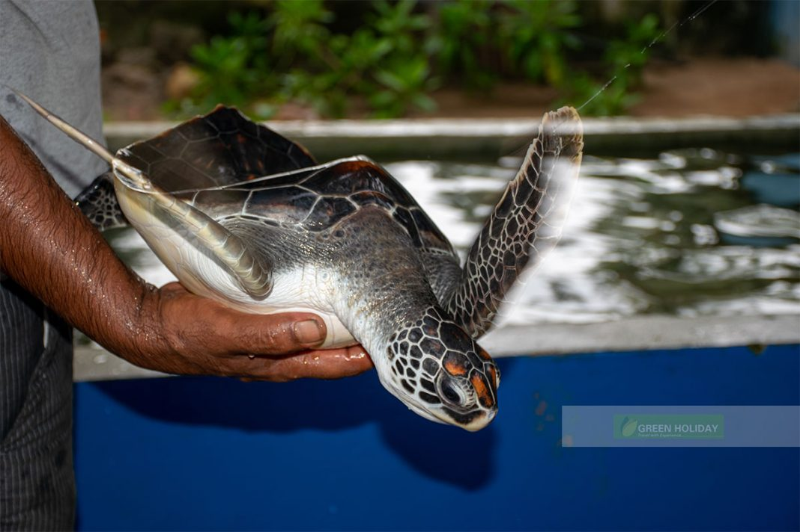
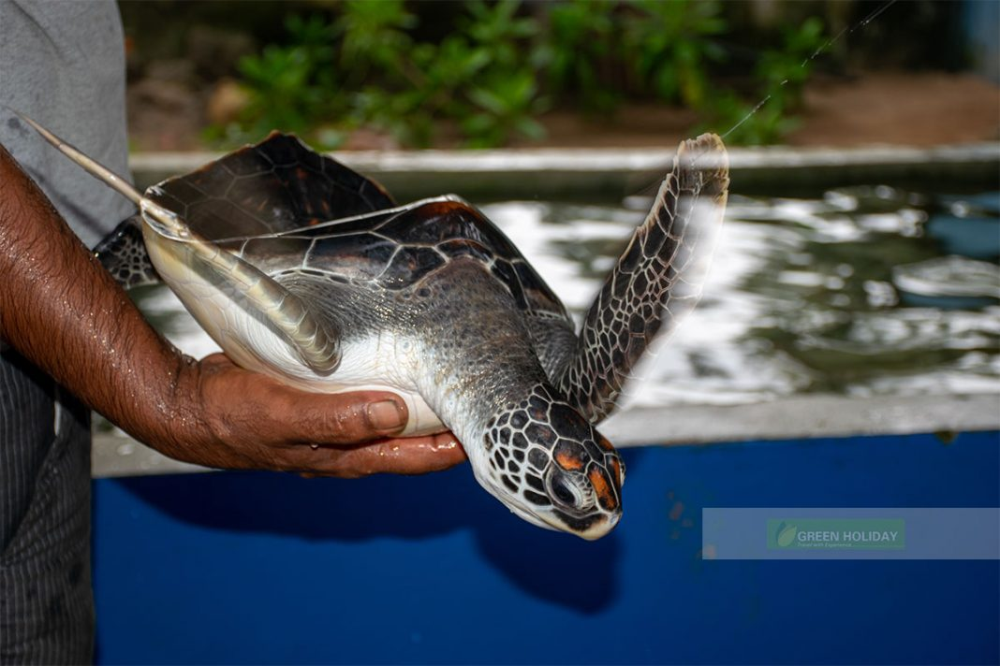

KOSGODA
HATCHERY
UWhere Conservation Meets the Shores!
Welcome to Kosgoda's Turtle Oasis, a paradise for our beloved sea turtles! Immerse yourself in the wonders of our hatchery, where these gentle creatures find protection and care. Witness the magic as adorable hatchlings emerge from their nests and make their way to the sparkling ocean. Explore our educational exhibits, meet our dedicated team, and join the mission to ensure the survival of these magnificent beings. At Kosgoda's Turtle Oasis, conservation meets adventure, making it a must-visit destination for turtle enthusiasts of all ages.Dive into a World of Turtles!
Turtle Feeding
Get up close and personal with the resident turtles as you participate in their feeding sessions. Learn about their diet, feeding habits, and the important role they play in maintaining the balance of marine ecosystems.Nighttime Turtle Watching
Embark on a thrilling nighttime adventure to witness the nesting process of sea turtles. Accompanied by trained guides, you can observe the mesmerizing sight of mother turtles coming ashore to lay their eggs. This rare and awe-inspiring experience provides a deeper understanding of the nesting behavior of these incredible creatures.Turtle Conservation Volunteer Programs
Get involved in meaningful conservation efforts by participating in volunteer programs. Assist hatchery staff in various activities such as cleaning tanks, feeding turtles, and maintaining the facilities. This hands-on experience allows you to actively contribute to the well-being and conservation of the turtles.Educational Exhibits
Explore our exhibits that showcase the life history and conservation efforts of sea turtles. Learn about the threats they encounter and discover ways you can contribute to their protection.Turtle Conservation Talks
You can also engage in informative and interactive sessions led by our knowledgeable staff. Discover fascinating facts about sea turtles, their life cycle, and the conservation efforts taking place to protect these magnificent creatures.Gallery

 
